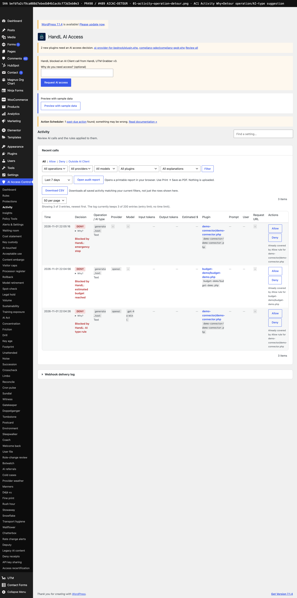
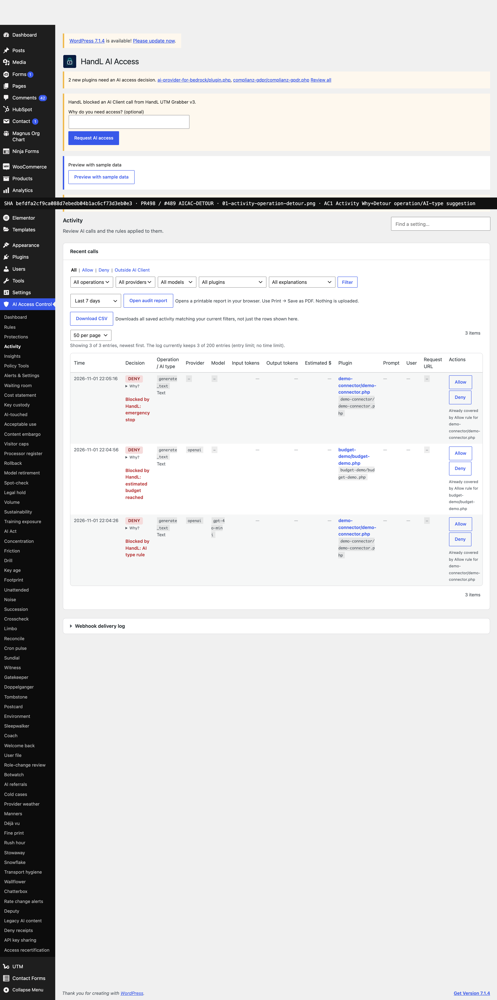
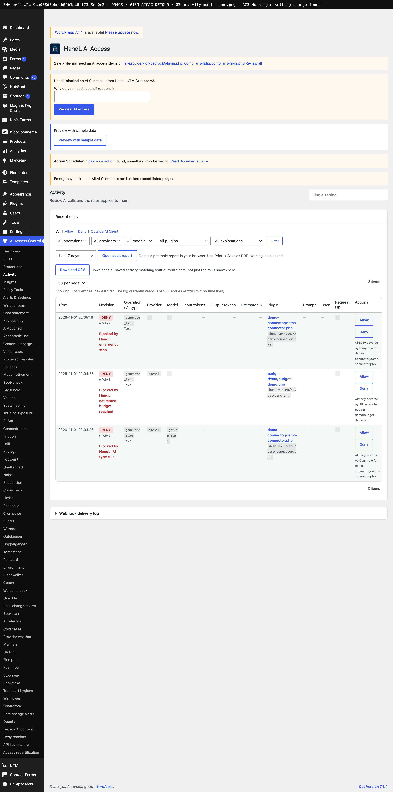
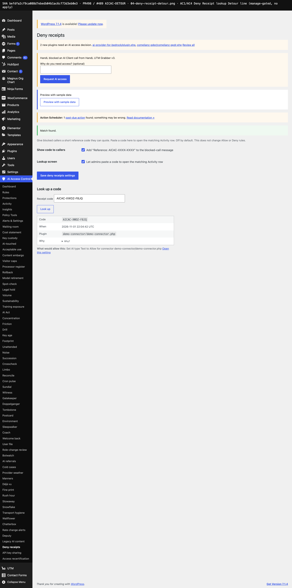
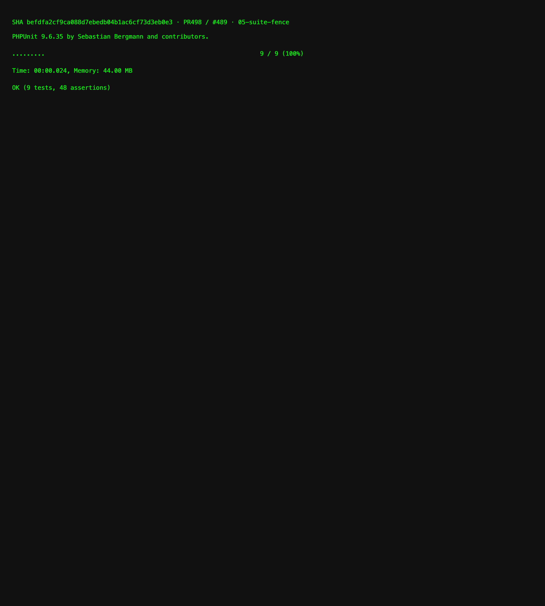

Headless Chrome against live local WordPress admin on handl-sandbox at force-asserted plugin checkout SHA befdfa2 (database/489-detour, Krusty copy PASS + CarbonTest CI fix). Seeded deny Activity rows + Deny Receipt lookup; screenshots are rendered wp-admin HTML (not local composed stubs).




